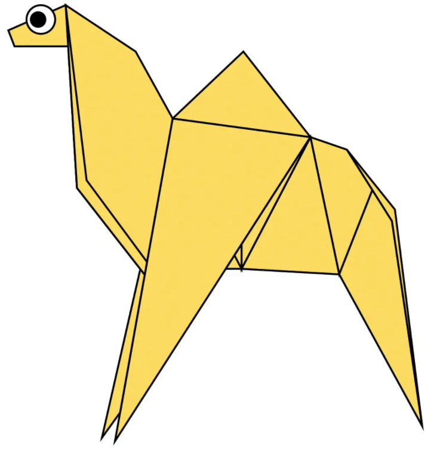
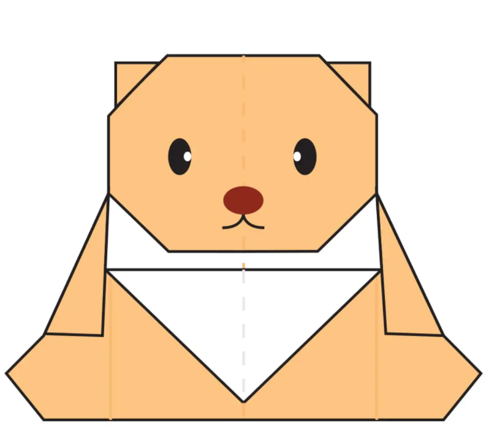
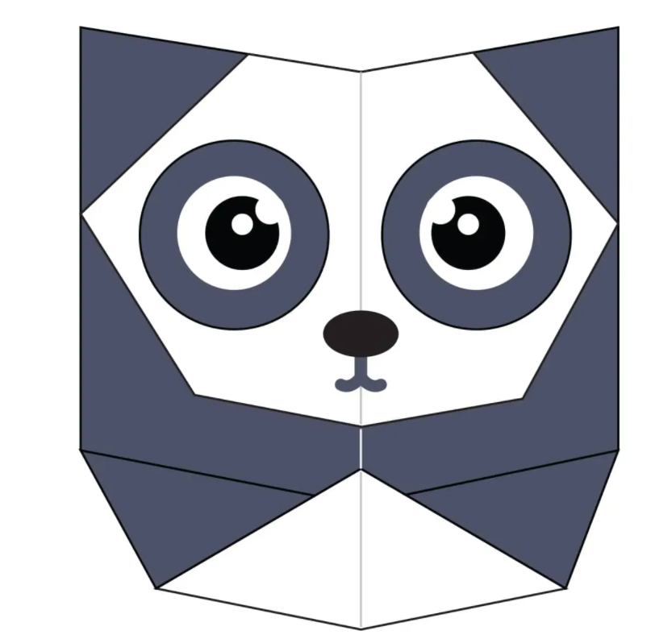
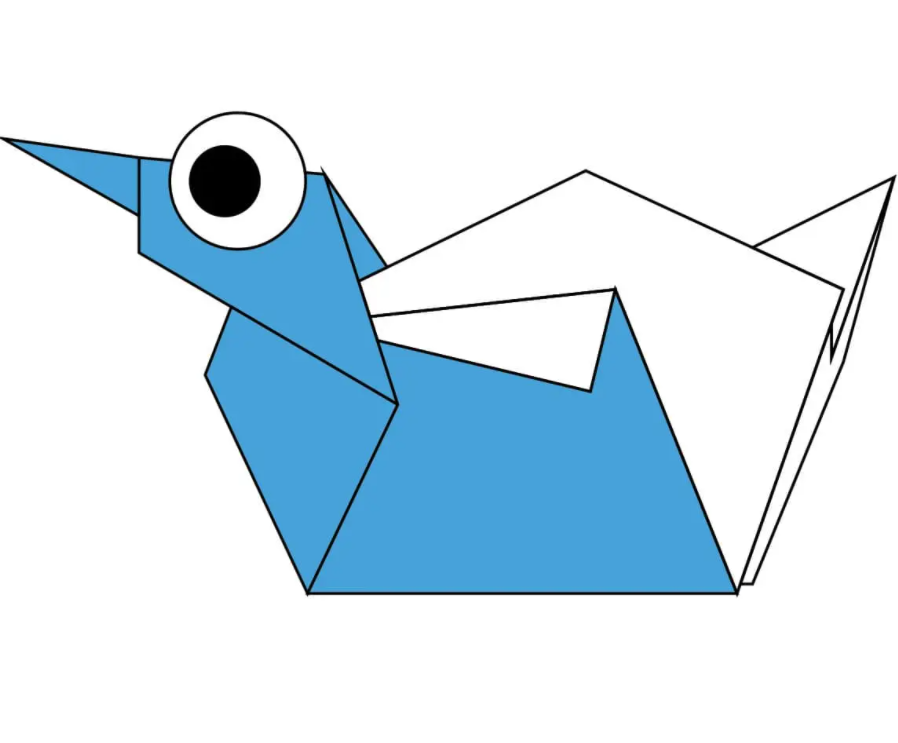

Click the picture to see instructions.
Camel
- Camel's ears are furry
- Camel can move easily across the sand because of its specially designed feet
- When they find water, they will drink as much as possible
Click the picture to see instructions.

Chameleon
- Chameleons are reptiles that are part of the iguana suborder
- Changing skin color is an important part of communication among chameleons
- Most chameleons have a prehensile tail that they use to wrap around tree branches
Click the picture to see instructions.

Pigeon
- Pigeons might be the first domesticated bird
- They can find their way back to the nest from 1300 miles away
- Some pigeons distract falcons with rump feathers
Click the picture to see instructions.
Bear
- Brown bears are generally loners who will only seek a mate for short periods
- At birth, bear cubs are blind and naked
- Brown bears in the wild are mainly active at dusk and at night
Click the picture to see instructions.
Panda
- Giant pandas are good at climbing trees and can also swim
- Pandas go from pink to white and black (or brown)
- An adult can eat 12–38 kilos of bamboo per day!
Click the picture to see instructions.

Flying Cicada
- Cicadas can survive a huge fall as babies, or nymphs
- Most have red-orange eyes
- Females may be attracted to the sound of motors
Click the picture to see instructions.
Duck
- Ducks are also called 'waterfowl' because they are normally found in places where there is water like ponds, streams, and rivers
- Ducks can live up to 20 years
- When there is more daylight, the ducks will lay more eggs